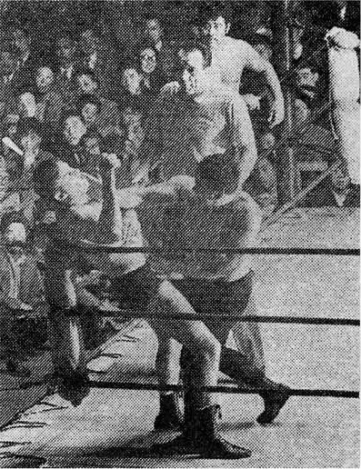
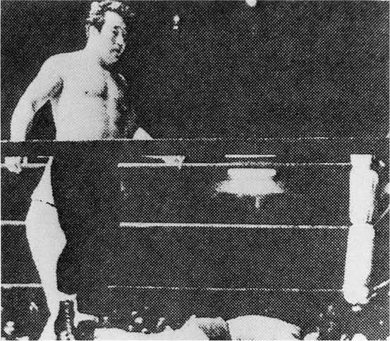

Книги
КнигиГлава 2
Оцифровано для VSplanet.net
1. Рождение «Ректосановских курсов»
Пассажирский самолет, на борту которого находился Рек То Сан, медленно приземлился в аэропорту Ханеда.
Рек То Сан смотрел в окно самолета на территорию аэродрома. Он не верил своим глазам и вытирал глаза. Было многолюдно. Над головами собравшихся развевалось на ветру широкое полотнище с надписью: «Привет господину Рек То Сану!», «Поздравляем господина Рек То Сана с победой!»
По посадочной полосе суетились корреспонденты с фотоаппаратами.
Контраст был слишком большой, если сравнивать настоящую встречу с февралем прошлого года, когда провожали его на Гавайи в этом же аэропорту. Тогда было лишь несколько провожающих, в том числе Нийта Синсаку и Танака Беэтаро. Аэропорт был почти пустым.
«Тогда японцы оскорбляли меня, обзывая «полуостровитянином», а теперь зовут меня «господин Рек То Сан».
Думая так, Рек То Сан самым последним спустился по трапу.
В окружении корреспондентов он направился к зданию аэропорта. В нем было много встречающих. Пробиваясь сквозь толпу, подошел к Рек То Сану благовидный мужчина в очках позолоченной оправы. Тот остановился напротив Рек То Сана и крепко пожал ему правую руку.
— Господин Нийта, сейчас вернулся я, Рек То Сан,—поклонился борец.
— Рек То Сан, поздравляю вас.
Нийта Синсаку слегка погладил его по плечу. Корреспонденты сфотографировали их встречу. Они наперебой задавали Рек То Сану вопросы.
— Господа корреспонденты, надо же передохнуть. Уже подготовлено помещение для интервью. Идемте туда,—ответил вместо Рек То Сана Нийта Синсаку и пригласил их на место пресс-конференции.
Со следующего дня после возвращения из заграничных турниров Рек То Сан прилагал большие усилия для создания общества борцов-профессионалов. Он навещал многих влиятельных людей и одновременно уговаривал Нийту Синсаку оказать ему помощь. На это он целиком истратил доллары, заработанные им, проливая кровь и пот в соревнованиях за рубежом. Нийта Синсаку пришел к выводу, что создание общества борцов-профессионалов даст большие прибыли, и немедленно приступил к его организации. Так было создано «Японское акционерное предприятие по устроению профессиональной борьбы», а его президентом был назначен Нийта Синсаку.
Вообще Рек То Сан имел целью создание единого общества профессиональной борьбы. Одной организацией упомянутого предприятия было рановато кричать «ура». Но это было очень благоприятно для организации общества борцов-профессионалов.
Рек То Сан несколько дней подряд посещал журналистов и работников телевещания, чтобы ускорить создание общества борцов-профессионалов. Чуть ли не каждый день не только в спортивной газете, но и в колонках спорта и физкультуры других газет помещены заметки, посвященные профессиональной борьбе. Один за другим навещали Рек То Сана молодые люди, желавшие стать борцами-профессионалами. Он строго подобрал будущих борцов-профессионалов среди молодых, занимавшихся дзюдо или сумо, борьбой или бейсболом. Он мобилизовал их на переделку деревянного склада, предоставленного Нийтой Синсаку, в тренировочный зал для профессиональной борьбы. Это и были «Ректосановские курсы».
2. Схватка с Ру Тхезом
Оки Сикина позвонил Рек То Сану по международному телефону:
— Рек То Сан, на Гавайях состоятся отборочные состязания борцов-профессионалов, желающих тягаться с Ру Тхезом.
— Господин Оки, благодарю вас.
Голос Рек То Сана дрожал от волнения.
— Дата соревнований предусматривается в последней декаде ноября. Местом состязаний назначен клуб «Сибик». Уже объявлен список борцов-участников. Все они довольно сильные. Ведь они стремятся завоевать первенство на международных соревнованиях сильнейших борцов-профессионалов. . . Приезжай как можно скорее. Лучше бы тренироваться здесь, в клубе «Сибик».
— Спасибо. Сейчас же отправлюсь.
Рек То Сан положил телефонную трубку. Итак, в аэропорту Ханеда он сел в пассажирский самолет на Гавайи. Это была вторая турнирная поездка Рек То Сана на Гавайи, вторая поездка на схватку в США.
29 ноября 1953 года вечером в клубе «Сибик» открылось отборочное состязание борцов-профессионалов, претендующих на встречу с Ру Тхезом. В числе его участников были широко известные борцы-профессионалы мира—Рек То Сан, Боби Бранц, Франк Бароа, Ар Раборок, Бат Кхачис, Томи Одор, Сами Бак. . .
Рек То Сан провел соревнования так, как советовал Оки Сикина. Он наносил противникам режущий удар каратэ по шею, плечу и, наконец, груди. Это была его самобытная тактика. Финальную схватку он вел с Сами Баком. Состоялась 30-минутная игра. Сами Бак был сильным борцом. Он с сотрясающим весь клуб криком шел навстречу ударам каратэ Рек То Сана. Рек То Сан понял, что если противник захватит его, нельзя рассчитать на победу, и непрерывно ударил его «ребром ладони». Однако Сами Бак не знал отступления, бросился на соперника, словно танк. Противник обхватил его обеими руками. Рек То Сан старался выбраться, но было тщетно.
Сами Бак затянул пояс Рек То Сана изо всех сил. Среди борцов-профессионалов мира широко известен его крепкий зажим, который может повредить даже кость. У многих борцов-профессионалов были повреждены кости от его зажима.
Не только судья на ковре, но и зрители полагали, что у Рек То Сана сломится кость или он сдастся. Когда прошло 27 минут, Рек То Сану удалось вырваться из зажима противника. На этот раз он, используя откат каната, налетел на противника, словно запущенный снаряд. Бак упал на пол. Пожалуй, в таком случае простые борцы не смогли бы встать. Однако тот пытался подняться с ковра. Тут Рек То Сан стал непрерывно бить Бака «ребром ладони», и он не смог встать. Воспользовавшись этим случаем, Рек То Сан перешел в нажим. Зрители считали, что Бак окажется побежденным. В этот миг он вытолкнул Рек То Сана и поднялся с ковра. Последний ударил противника «ребром ладони». Тот оказался совсем пассивным. Было очевидно, что победа будет за Рек То Саном. Но, к сожалению, истекло время, и схватка кончилась вничью. Отложить время борьбы или снова начать ее—точнее говоря, отложить время на 10 минут или снова начать 30-минутную игру—этот вопрос был серьезно обсужден. В тот вечер оба борца вели состязание три раза. Если продолжать его дальше, то опасна была бы их жизнь.
— Господин Оки, прошу вас предложить продлить время до исхода игры,—обратился Рек То Сан к нему, находящемуся у ринга.
Вообще в профессиональной борьбе не принято определить результаты игры путем посторонней оценки, так что необходимо соревноваться до конца.
— Рек То Сан, человеческой силе есть предел. Если продлить время, то тебе не миновать смерти! . . —проговорил Оки Сикина в испуге.
У Сами Бака не хватало силы продолжать борьбу с Рек То Саном.
Вскоре Карасик поднялся на ринг и, держа в руке микрофон, объявил:
— Уважаемые зрители, сообщаю вам о результатах обсуждения. Решено предоставить Рек То Сану право бросить вызов Ру Тхезу. На это согласился и Сами Бак.
Гавайская газета «Боди» от 4 декабря 1953 года под заголовком «Соперничество Рек То Сана с абсолютным чемпионом мира по профессиональной борьбе Ру Тхезом» информировала в верхней спортивной колонке следующим образом: «Послезавтра, 6-го числа (воскресенье), вечером в клубе «Сибик» состоится схватка между Рек То Саном и абсолютным чемпионом мира по профессиональной борьбе Ру Тхезом. Впервые японский борец выступает на арене для захвата звания чемпиона мира. Рек То Сан будет без остатка проявлять свои силы на этой встрече».
Вечером 6 декабря клуб «Сибик» был переполнен зрителями.
Рек То Сан поднялся на ринг и за ним следовал Ру Тхез, которого прозвали «стальным мужчиной». Он—абсолютный чемпион мира по профессиональной борьбе открытой категории. Он гордился тем, что выиграл 700 раз в 700 схватках.
В мировой истории профессиональной борьбы не было прецедента, когда борец победил подряд 700 раз.
Раздался звон, извещающий о начале схватки. Шло 61-минутное состязание на три гейма. С самого начала Рек То Сан взял в свои руки инициативу. Он захватил за правую руку Ру Тхеза и скрутил ее. Противник оказался в пассивности. Протекало 10, 20 и еще 10 минут. Лишь тогда Ру Тхез выбрался из пассивного положения и перешел в наступление. Тот бил рукой в подбородок Рек То Сана. От внезапного удара он опустился на колени. В следующий момент противник левой рукой бил Рек То Сана. От непрерывного и сильного удара он не мог держать равновесие. Не упустив шанса, Ру Тхез поднял партнера и выбросил его на пол. Когда последний пытался встать с ковра, противник ударил его с левой стороны. У Рек То Сана потемнело в глазах.
— Раз уклоняйся в сторону! Перестань броситься на партнера!
Доносился крик Оки Сикины.
«Раз уклоняйся от атаки».
Рек То Сан подползал под канат. Расстояние было не больше двух метров, но оно казалось ему бесконечно далеким. Ру Тхез сильно бил его ногой.
— Не оглядывайся назад! Не сопротивляйся! Только уклоняйся!—кричал Оки Сикина. По его лицу струился пот.
Зрители хлопали в ладоши. Некоторые из них, встав с места, аплодировали американскому борцу. Вся публика поддерживала Ру Тхеза.
Рек То Сану удалось с трудом уклониться под канат.
— Молодец! Теперь перейди в нападение!—сказал Оки Сикина, подойдя к рингу и ударяя кулаком по полу.
Рек То Сан вышел из опасности. Ру Тхез, не давая передышки, атаковал, чтобы снова загнать его в пассивное положение. Рек То Сан с распростертыми руками бросился на американца, чтобы обхватить его пояс. Это было его обманное движение. Ру Тхез чуть попятился назад. В этот момент Рек То Сан наносил по его груди горизонтальный режущий удар каратэ. Другой борец рухнул бы на ковер, не устояв от удара, но Ру Тхез только шатался, потеряв равновесие. И все же он норовил нанести контрудар. Рек То Сан, видя шатающегося противника, чуть смягчил напряженность. Коварный Ру Тхез уловил этот момент и ринулся на Рек То Сана. Последний, ошеломленный, бил соперника правой рукой горизонтально. Тот опустился на колени, несмотря на то, что удар был не так сильный. Рек То Сан поглядел на партнера и понял, что тот предпринимает обманный прием. Он намеревался окончательно свалить его режущим ударом каратэ. Но уже было поздно. Ру Тхез, подняв его над головой, выбросил прямо на пол. Последний не смог встать. Судья на ковре начал считать. Рек То Сан проиграл один раз.
Оки Сикина поднялся на ринг и слегка тронул Рек То Сана по щеке.
— Рек То Сан! Как тебе не стыдно! Встань!
Рек То Сан, открыв глаза, вытолкнул Оки и поднялся.
— Каков результат?
— Результат? Ты первым потерял одно очко. Ты забыл, что минутное зазнайство, минутное ослабление напряженности приводит к непоправимому поражению в профессиональной борьбе! Тем более, твой противник—это Ру Тхез, называемый Зевсом профессиональной борьбы. Ты же свою явную победу превратил так в неудачу!
Оки Сикина с досадой ударил кулаком по груди Рек То Сана.
Рек То Сан не вымолвил ни слова. Но кричал про себя.
«Господин Оки, прошу прощения. Я виноват. Посмотрите, как борюсь со второго тура!»
Прошел минутный перерыв.
«Попробуй мой удар!» Со звоном, извещающим о начале второго тура, Рек То Сан непрерывно наносил Ру Тхезу режущий удар каратэ. Не выдержав стремительной атаки, коварный противник уклонился в сторону каната и в то же время выждал шанса. Тот, используя откат каната, налетел на Рек То Сана «снарядом». В этот миг последний ударил в его грудь «ребром ладони», но удар попал не в грудь, а в шею. Ру Тхез, захватив обеими руками за шею, упал на пол. Судья начал считать, но тот не смог подняться. Счет стал 1:1.
Снова прошел минутный перерыв. Ру Тхез, восстановив силу, яростно нападал на соперника. Осталось три минуты. Значит, минуло 58 минут после начала состязания. Рек То Сан непрерывно бил противника «ребром ладони». Последний, уклоняясь от ударов, двигался по краю площадки. Внезапно он прилип к туловищу Рек То Сана сзади и поднял его над головой. Это был его убийственный прием—«бросок прогибом».
С помощью этого способа Ру Тхез завоевал звание абсолютного чемпиона мира по профессиональной борьбе. Туловище Рек То Сана гнулось, словно лук, и падал вертикально на пол головой вниз. В результате он подвергся сотрясению мозга. Когда он пришел в себя, судья на ковре уже поднял руку Ру Тхеза.
Рек То Сан проиграл со счетом 1:2.
— Рек То Сан, хотя ты потерпел поражение, но хорошо воевал. Похвально! Ведь прошло лишь два года после того, как ты начал по-настоящему заниматься профессиональной борьбой. Как говорят, первый блин комом. Считаю, что сегодняшняя схватка дает тебе большой урок. Не падай духом. Будет еще шанс.
Оки Сикина утешал Рек То Сана, вытирая полотенцем пот с его лица в зале ожидания для борцов.
— Сегодня я потерпел поражение. Но обязательно завоюю чемпионство.
Рек То Сан крепко сжал кулак. После встречи с Ру Тхезом он тут же поехал в Лос-Анжелес. Пребывая там 4 месяца, он проводил соревнования 70 раз и ни разу не проиграл. Перед отъездом в Японию он согласился устроить состязания в Японии с братьями Шафами—чемпионами мира по профессиональной борьбе парного разряда. Он попросил Оки Сикину быть судьей-арбитром в этих соревнованиях. Тот с охотой дал согласие.
3. Трус
Начало ноября 1954 года. Рек То Сан, как обычно, целый день интенсивно тренировался и, упарившись, погрузился в диван в зале отдыха. Выпив две бутылки лимонада, принесенные официанткой, он закрыл глаза.
— Господин, приехал к вам господин Ёсимати,—сообщила официантка.
— Ёсимати?—открыл глаза с недоумением Рек То Сан.
Отворилась дверь и вошел мужчина в пальто. Это был его секретарь Ёсимати. Он посещал Рек То Сана только по делам, безмолвно и точно, как машина, выполняя поручения. Сегодня Рек То Сан не дал ему никакого задания, да и не о чем было слушать у него. Рек То Сан предчувствовал, что случилось какое-нибудь необыкновенное дело.
— Господин, только что позвонил вам,—сказал секретарь без смысловой связи.
— Кто позвонил?—спросил Рек То Сан, предложив ему сесть рядом.
Он достал из кармана номер «Асахи симбун» от 1 ноября.
— Позвонил вам господин Моригути, заведующий деловым отделом редакции «Асахи симбун». Он сообщил, что господин Кимура выразил готовность вступить в поединок с вами.
В газете была помещена следующая «беседа Кимуры»:
«Профессиональная борьба Рек То Сана, в отличие от моей, является спектаклем, сопряженным со множеством жестов. Ни в коем случае я не проиграю в состязании в силе с ним».
— Кимура?! Он не сказал о дате встречи?—снова спросил Рек То Сан не без волнения.
В состязании парного разряда с братьями Шафами, состоявшемся в феврале, Кимура играл роль «защитника», а Рек То Сан—роль «атакующего». В результате популярность последнего достигла апогея, тогда как авторитет первого упал на землю. Недовольный этим, Кимура, порвав с Рек То Саном, вышел из Японского общества профессиональной борьбы. Потом он организовал в Кумамото на Кюсю Международное общество профессиональной борьбы. Так он сплел заговор с целью отнять спортсменов от Японского общества профессиональной борьбы.

— Говорят, что в интервью журналисту «Асахи симбун» господин Кимура заявил: «В соревнованиях с братьями Шафами я играл лишь роль, повышавшую авторитет Рек То Сана, но никогда не потерплю поражение в настоящей борьбе с ним. Я первый дзюдоист Японии, а этот молодой парень Рек То Сан занимал только третье место в национальной борьбе».
Ёсимати всматривался в лицо Рек То Сана. Его глаза горели огнем.
— Как говорится, щенок не боится тигра! Передайте Моригути, что я охотно принял вызов Кимуры.
Рек То Сан резко встал с места и вышел из зала. Он вспомнил проходившие в феврале соревнования парного разряда с братьями Шафами на первенство мира. Он выступал вместе с Кимурой в паре. Это был первый в Японии чемпионат мира по профессиональной борьбе парного разряда. Братья Шафы были чемпионами мира. Среди борцов-профессионалов было немало названных братьев, но они явились родными братьями. У старшего брата Бена Шафа рост был 195 см, вес—115 кг, а у младшего Майка Шафа рост—197 см, вес—118 кг. Они обладали высокой техникой и стойким боевым духом. Особенно у них комбинация в играх получилась как нельзя лучше.
В упомянутых играх пара Рек То Сан—Кимура не успела выиграть братьев Шафов. Первенство кончилось вничью 1:1, и эти братья сохранили за собой звание чемпиона мира. Рек То Сан положил на обе лопатки Бена и Майка, но у Кимуры получилось обратное. Рек То Сану было жаль, что не смог отнять у братьев Шафов звание чемпиона мира из-за поражения Кимуры. А этот Кимура выдает черное за белое.
26 ноября Кимура устроил в отеле «Циёда» пресс-конференцию и официально предложил Рек То Сану единоборство. Рек То Сан согласился, удовлетворив его требование о дате и месте встречи. Договорились вести 61-минутное соревнование на три гейма, как принято в международных состязаниях, в зале «Курамаэ» 22 декабря. Не было преувеличением сказать, что поединок между Рек То Саном и Кимурой является чемпионатом Японии по профессиональной борьбе.
В номере «Асахи симбун» от 23 декабря была помещена заметка: «Вызывало очень большой интерес единоборство обоих спортсменов: Кимуры—первого дзюдоиста Японии и Рек То Сана, прославившего свое имя в национальной борьбе. Собралось более 13 тысяч зрителей, и спортзал окружали полицейские. . .»
Кто станет чемпионом Японии по профессиональной борьбе? Рек То Сан или Кимура? С раннего утра люди потоком хлынули в спортзал «Курамаэ». С приближением времени начала состязания цена билета, стоявшего 3 тысячи иен, вскочила в 10, 15 и 20 тысяч иен. На «черном рынке» платили столько, сколько требовали.
Кимура был председателем Международного общества профессиональной борьбы и обладал высшей, 7-й категорией дзюдо. Одно время он выступал дзюдоистом-профессионалом и ни разу не проиграл. Он освоил разнообразные приемы игры. Стоило ему взять руку или ногу партнера, как он почти безошибочно бросал его через себя. Это было его особое мастерство. Не случайно называли его «богом дзюдо» и говорили: «Не было и не будет в Японии такого спортсмена, как Кимура».
Кимура вступил на арену профессиональной борьбы в 1950 году на Гавайях, то есть на один год раньше, чем Рек То Сан. Он добился больших успехов в Лос-Анжелесе и Сан-Франциско как борец-профессионал и стал известным в кругах мировой профессиональной борьбы.
23 декабря «Майнити симбун» подробно сообщила о соревнованиях между Рек То Саном и Кимурой с подзаголовками: «Первый чемпионат Японии по профессиональной борьбе», «Рек То Сан опрокинул Кимуру», «Поединок кончился за 15 минут 49 секунд. Кимура ранен и проиграл, не успев продолжать состязание», «Слишком большая разница в силе». . . Сами эти подзаголовки дают ясное представление о ходе встречи. 61-минутное соревнование на три гейма кончилось за 15 минут 49 секунд. А как шло единоборство в самом деле?
Когда раздался звонок о начале игры, оба борца поздоровались рукопожатием и отодвинулись назад. Начался поединок. Спортсмены только шевелили верхней половиной тела, видимо, разведывая тактику партнера. Первым наступал Кимура, а Рек То Сан осторожно оборонялся. Кимура взял руку Рек То Сана, и последний старался вырвать ее. В этот момент Кимура выбросил Рек То Сана через плечо, применив свой оригинальный прием. Рек То Сан кувырком полетел на поле. Кимура взял шею Рек То Сана и еще раз бросил его через себя. Потом без промедления обвил рукой шею противника и начал давить. В зале раздавались бурные овации и возгласы. Рек То Сан с трудом встал с обитой шеей. Чуть не потерял одно очко. Пока состязание шло нормально. «Утекло 15 минут!»—сообщил диктор.

В этот миг Кимура ударил ногой в лонный бугорок Рек То Сана.
Издавая вопль, Рек То Сан плюхнулся на поле. Не было видно ни лица Кимуры, ни глаз зрителей. Слышались только громкие крики публики:
— Кимура, бей сильнее!
— Кимура, еще раз ударяй ногой!
— Разбивай Рек То Сана!
Рек То Сан поднялся, напрягши все силы, и едва выстоял на ногах. «Это не спортивные соревнования! Он грубо нарушил правила игры!»
Рек То Сан подошел к судье-арбитру, стоявшему посередине ринга, и произнес:
— Это нарушение правил!
Судья на ковре отрицал и махнул рукой.
Рек То Сан понял, что напрасно протестовать против несправедливого поступка судьи. Он направил взгляд на Оки Сикину, стоявшего у ринга. Он правой рукой изображал режущий удар каратэ и кричал:
— Не затягивай игру! Покажи свой прием!
Рек То Сан кивнул головой и говорил про себя: «Пусть смотрят: победит кореец или японец!»
Он начал наносить Кимуре режущий удар каратэ, а также удар ногой. Партнер пятился, защищаясь. Но все же норовил хватать руку Рек То Сана. Но он не давал ему шанса, нанося непрерывный удар. Кимура не мог удержаться и упал на поле. Рек То Сан быстро подбежал к нему, чтобы давить, но судья на ковре преградил ему путь. Рек То Сан стоял в центре ринга, безмолвно глядя на судью, мешавшего ему в игре. Еле встал Кимура. Шатаясь, он снова пытался хватать руку Рек То Сана. Режущий удар каратэ падал на его грудь. Кимура, потеряв сознание, упал лицом вниз и больше не смог встать. Его увезли на носилках.
Пояс Рек То Сана был обвязан «лентой чемпиона Японии по профессиональной борьбе».
Когда Рек То Сан вернулся в зал отдыха, ватагой бросились к нему журналисты.
На их вопросы он ответил:
«Кимура трусливый спортсмен. Нынче вечером перед игрой он предложил мне ничью, представив даже бумагу с печатью. Профессиональная борьба не манипуляция, а спорт. Я удивился и не ответил. Даже во время состязания он опять предложил ничью. Я, ошеломленный, мотал головой. Тогда он ударил ногой в мой жизненно важный орган. Это было неожиданным нарушением правил. Чудом я остался в живых. Зря я думал, что еще вчера партнер решил убить меня, и я должен ответить тем же». Так думал я и активно вел соревнования. Кимуре повезло. Не случилась беда, так как он больше не смог подняться. Вы сами видели напряженную сцену и можете представить себе, что произошло бы дальше, если бы он встал. . .»
Журналисты тут же поехали к Кимуре в отель «Циёда». Он разговаривал с кем-то по телефону. Когда Кимура оставил трубку, журналисты обратились к нему с вопросом: «Рек То Сан говорит, что вы предложили ему манипуляцию, то есть закончить соревнования вничью. Это правда?»
— Так сказал Рек То Сан? У этого мерзавца нет ни нравственности, ни чувства долга. Он же не японец, а кореец. Ой, как досадно!—кричал Кимура и хлопнул стакан вина.—Я не ударил ногой в жизненно важный орган Рек То Сана. Если бы так сделал, он не смог бы встать. Ударил я в верхнюю часть ляжки. Факт, что вчера вечером я потерпел жестокое поражение у Рек То Сана. Но не считайте, что кончено мое состязание с ним. . .
Он задумался над чем-то и добавил:
— Судьба Рек То Сана решена на вчерашней встрече.
— Что вы имеете в виду?—Даже журналисты с острой проницательностью и сообразительностью не могли понимать его слова.
— Я говорю, что Рек То Сан нажил себе слишком много врагов. Он же не японец. Вот в чем дело. . .
Кимура избежал подробного объяснения, но его слова намекали, что над головой Рек То Сана собираются черные тучи.
28 января 1955 года в спортзале в Осаке было единоборство Рек То Сана и Ямагути. Одно время Ямагути выступал борцом-профессионалом под руководством Рек То Сана. Когда Кимура организовал Международное общество профессиональной борьбы, он создал в Осаке Общеяпонское общество профессиональной борьбы и стал его президентом. Ямагути располагал 6-й категорией дзюдо и имел тесные отношения с Кимурой. Этот японец больше всех досадовал на позорное поражение Кимуры в состязании с Рек То Саном. Он поклялся отомстить за Кимуру и бросил Рек То Сану вызов. Но Ямагути был слишком слабым партнером Рек То Сана. Поэтому Рек То Сан вел игру иначе, чем с Кимурой, не применял режущий удар каратэ. Ямагути нападал, а Рек То Сан защищался. Первый непрерывно атаковал, убедившись, что последний не прибегает к режущему удару каратэ. Когда минуло 43 минуты 59 секунд, Рек То Сан, игравший пассивно, одержал первую победу путем легкого дожима. Через 59 минут завоевал вторую победу опять дожимом. За остальные две минуты он снова давил партнера и одержал третью победу. Так кончилось 61-минутное состязание. Заявление Ямагути об отмщении за Кимуру стало предметом усмешки зрителей.
После соревнований Рек То Сан сразу сел в экспресс, чтобы вернуться в Токио. Лежа в купе, он вспоминал поединок с Кимурой и Ямагути.
«Зачем они предложили состязание без надежды на победу? Почему они относятся ко мне, как к врагу? Потому, что я кореец? Я не причинил им никакого зла. Кто бросит мне вызов на следующий раз? . .»—думал он, но не мог уяснить себе возникавшие один за другим вопросы.
Невольно он чувствовал одиночество, но некому было выложить свою душу. Рек То Сан поднял оконную занавеску и глядел в ночное небо. Искал глазами звезды, на которые он смотрел в детстве, лежа на песчаном берегу Восточного моря Кореи. Его охватила тоска по родине. Рек То Сан тихо напевал песенку «Моя родина», которой он учился у Кан Сын Мина, хозяина ресторана «Корейские блюда», расположенного у вокзала Коданда в Токио.
4. Черное нутро Нийты Синсаку
Нийта Синсаку был председателем совета Японского общества профессиональной борьбы, директором Японского акционерного предприятия по устроению профессиональной борьбы, директором стройкомпании «Нийта».
Однажды он вернулся домой утром, сел за низкий столик и, открыв блокнот, записал в него имя «Рек То Сан». Жена подсела к нему и предложила рюмку пива. Она читала случайно имя «Рек То Сан» в блокноте и бледнела. Она знала, что те, чье имя записывает муж в блокноте в скобках, оказались его противниками и врагами. Среди них были даже его названные братья.
Нийта, бывший гангстер, явился типичным потомком безжалостных самураев. Тот, чье имя записано им в блокноте, непременно был изолирован от общества или убит из-за угла.
— Этот Рек То Сан своевольничает, пренебрегая старшими борцами-профессионалами. . . Надо вправить ему мозги. Иначе он сможет сидеть над Японским обществом профессиональной борьбы и моим предприятием или привести их к банкротству. Они принесли бы баснословные прибыли,—бормотал про себя Нийта и велел жене:—Позвони в команду борцов и скажи, что я приглашаю Азумахудзи. . . Позови и Касаяму. . .
— Поняла,—встала жена бесшумно и вышла из комнаты.
Когда Нийта кончил завтрак, прислуга доложила, что прибыл господин Касаяма.
— Не случайно он служил в имперской армии. Пусть ждет в моем кабинете,—сказал Нийта и мигнул жене.
Та кивнула головой и принесла национальную одежду, которую он надевал во время, когда встречал дома гостей для важного дела.
Когда Нийта вошел в кабинет, Касаяма резко встал с места и произнес:
— Доброе утро!
— Привет. Садитесь,—сказал хозяин и сел на подушку, на которой вышита хризантема.
Вслед за ним сел молча и Касаяма. Увидев Нийту Синсаку в национальной одежде, он сразу понял, что тот собирается составить какой-нибудь новый план. Именно так в этом кабинете, одевшись в национальную одежду, Нийта вместе с Касаямой серьезно обсуждал план о создании Японского общества профессиональной борьбы и Японского акционерного предприятия по устроению профессиональной борьбы.
— Касаяма, я пригласил вас, чтобы обсудить вопрос о Рек То Сане.
Нийта открыл блокнот и глядел на Касаяму.
— Я тоже догадался об этом,—ответил гость и почесал в затылке.
Касаяма считался правой рукой Нийты или вторым лицом стройкомпании «Нийта». Нийта не составлял никакого плана без участия Касаямы и не делал никакого дела без его согласия. Так ценил он своего помощника.
У Касаямы было такое здоровое телосложение, как у борца. С детства он отличался умом. Окончив среднюю школу и военное училище с успехами, он служил в армии интендантом. Когда Япония капитулировала, он был полковником.
— Догадались? Высказывайте тогда ваши соображения,—попросил Нийта с интересом.
Сделав затяжку, Касаяма начал:
— Рек То Сан, нанеся полное поражение Кимуре и Ямагути, стал чемпионом Японии по профессиональной борьбе. Он стал героем, завоевав вместе с Эндо первенство Тихоокеанского бассейна по профессиональной борьбе парного разряда. Он стал почти непобедимым, но, к сожалению, у него нет сильных помощников. Их взяли с собой Кимура и Ямагути. Так сказать, он птица без крыльев. Это одна из основных проблем, связанных с судьбами Японского акционерного предприятия по устроению профессиональной борьбы. Не может быть, чтобы Рек То Сан не знал об этом. Он не такой борец, который проливает кровь и пот ради других, то есть для наживы организаторов этой борьбы . . . —Касаяма перестал говорить и снова закурил.
Нийта кивнул головой и зажег кубинскую сигару.
— Однако Рек То Сан не приведет к банкротству,—продолжал Касаяма,—Общество профессиональной борьбы и наше предприятие. Наоборот, он будет стараться развивать их. Будет устраивать зарубежные соревнования и вести международные состязания в Японии, пригласив иностранных борцов-профессионалов. С другой стороны, Рек То Сан станет искать и подготавливать борцов-профессионалов, способных соревноваться с иностранными спортсменами. Таким образом, он будет создавать среди устроителей профессиональной борьбы и борцов-профессионалов сильное впечатление, что без него не может существовать ни Общество профессиональной борьбы, ни предприятие по ее устроению, и в конце концов поставит под свою власть эти общество и предприятие. В этом нет никакого сомнения.
Нийта удивился, что так совпадали его с ним соображения.
— Действительно у вас острая проницательность. Вот почему я решил сделать Азумахудзи парой Рек То Сана.
— А согласится ли Азумахудзи стать борцом-профессионалом в команде Рек То Сана, перестав выступать в национальной борьбе? Ведь он чемпион Японии по этой борьбе, а последний занимал лишь третье место.
— Он согласится. Дело в том, каково будет мнение Рек То Сана. . .
— Если только согласится Азумахудзи, то он будет с охотой откликнется на это.
— Тогда все будет в порядке. Я позвал Азумахудзи. Он приедет. Давайте обсудим вопрос конкретно вместе с ним.
Нийта Синсаку хлопал в ладоши.
Прислуга бесшумно открыла дверь.
— Принеси шашечную доску,—велел он.
Играя в шашки, он думал об Азумахудзи. Он полагал, что этот король национальной борьбы не откажется от его предложения, если обещать ему предоставить важное место в театре Мэйдзи и крупные акции. А Касаяма, в свою очередь, думал над тем, с какой целью Нийта Синсаку намеревается вовлечь Азумахудзи в Японское общество профессиональной борьбы. Когда Азумахудзи станет парой Рек То Сана, последний обрадуется и процветет Общество профессиональной борьбы. Но, вероятно, не этого желает Нийта. Он, видимо, хочет ставить Азумахудзи во главе Общества профессиональной борьбы, отведя ему главную роль.
Нийте не хотелось, чтобы Японское общество профессиональной борьбы и предприятие по устроению этой борьбы принадлежали Рек То Сану. Дело было бы другое, если тот не кореец, а японец. Нельзя было допускать, чтобы традиции профессиональной борьбы в Японии сложились не японцем, а корейцем.
«Главную роль в профессиональной борьбе нужно отвести не Рек То Сану, а Азумахудзи»—решил про себя Нийта Синсаку.
Рек То Сан, победив Кимуру и Ямагути, стал общепризнанным первым лицом в японской профессиональной борьбе. Но ушли от него почти все сильные борцы и остались только Эндо и Сругауми. В такое время, точнее 12 декабря 1954 года, Тоёнобори, показавший необыкновенную силу в национальной борьбе, перестал заниматься этой борьбой и поступил в Ректосановские курсы. Спустя два дня следовал его примеру Азумахудзи. В марте следующего года Рек То Сан направился в США, взяв с собой Азумахудзи. По сообщениям, последний получил приглашение от Обществ национальной борьбы на Гавайях и в Лос-Анжелесе и поехал туда обучать борцов. Но на самом деле там он учился профессиональной борьбе.
Рек То Сану некого было бояться, раз его учениками стали Тоёнобори и Азумахудзи. Он стал королем японской профессиональной борьбы в буквальном смысле слова.
По прибытии на Гавайи он посетил Оки Сикину и рекомендовал ему Азумахудзи. Оки Сикина с охотой согласился тренировать Азумахудзи. Тот два месяца занимался тренировкой под его руководством. Оки Сикина составил тщательный план тренировки и точно выполнил его. Наряду с этой тренировкой Азумахудзи закалял тело в практической борьбе. Через четыре месяца вес его тела уменьшился от 160 кг до 125 кг. Рост его был 182 см. Он добился хороших результатов в соревнованиях. Он отлично играл в паре с Рек То Саном, намного лучше, чем Кимура. Завоевал первенства Гавайев Тихоокеанского бассейна по профессиональной борьбе парного разряда. А в метрополии США победил братьев Шафов. Такие успехи вызвали широкие отклики среди любителей профессиональной борьбы в США. Они назвали его «вторым Рек То Саном, появившимся в сфере мировой профессиональной борьбы как комета». Но Азумахудзи было не по душе название «второй Рек То Сан».
«Меня, этого Азумахудзи, считают за второго Рек То Сана? Значит, я, известный чемпион Японии по национальной борьбе,—ученик этого корейца Ким Син Рака, который занял лишь третье место в этой борьбе! Как бы не так. И в профессиональной борьбе я буду чемпионом Японии»,—дал он себе клятву.
Но Азумахудзи внешне держал хорошие отношения с Рек То Саном.
После четырехмесячной турнирной поездки за границей Рек То Сан вместе с Азумахудзи посетил «спортивный клуб» на Гавайях. Оки Сикина радушно встретил их. Он поздравил Рек То Сана и Азумахудзи с успехами в состязаниях и устроил банкет в роскошном ресторане на оживленной улице Гонолулу. Трое вышли из ресторана глубокой ночью.
Вернувшись в гостиницу, они легли спать после мытья в ванне. Азумахудзи сразу заснул и начал храпеть, но Рек То Сан, лежа на кровати, открыл письмо, которое передал ему Оки в ресторане. Письмо послал Тоёнобори.
«Поздравляю вас, господин Рек То Сан, с блестящими успехами в США»,—начал он так и сообщил, что Сругауми, пользуясь заграничной поездкой Рек То Сана, созвал чрезвычайное совещание борцов.
На Ректосановских курсах собрались кадровые борцы-профессионалы из Японского общества профессиональной борьбы. На совещании Сругауми поставил экстренный вопрос—создать новую команду борцов-профессионалов во главе с Азумахудзи, Эндо, Тоёнобори и Сругауми. Тогда, по его словам, она будет сильнейшей в Японии организацией борцов-профессионалов. А Ректосановские курсы прекратят свое существование, ибо борцы-профессионалы перейдут наперебой в новую организацию. Так будет создано новое общество борцов-профессионалов во главе с Нийтой, без Рек То Сана. Казалось, Сругауми действует в сговоре с Нийтой, судя по тому, что он посмел выдвинуть такой дерзновенный план и настойчиво добивается его осуществления. Активно выступали против этого предложения Танака Беэтаро и Тоёнобори, которые были в долгах у Рек То Сана еще с периода, когда они занимались национальной борьбой. Они утверждали, что будет создана, несомненно, сильнейшая в Японии организация борцов-профессионалов, но относительно ослабнет ее сила с точки зрения мирового масштаба. Так обе стороны не смогли добиться согласия. В заключение Тоёнобори попросил Рек То Сана скорее вернуться и поправить сложное положение в Японском обществе профессиональной борьбы.
«Как же это так? Нельзя допускать развала Японского общества профессиональной борьбы! Намереваются создать другое общество профессиональной борьбы во главе с Азумахудзи? Поддерживает это Нийта Синсаку?. . »
Рек То Сан вспомнил, что перед отъездом на Гавайи вместе с Азумахудзи он был у Нийты Синсаку. Тот встретил их в кабинете директора. Хлопая по плечу Рек То Сана, он попросил его активно помогать Азумахудзи.
— Господин директор, об этом не беспокойтесь. Я помогу ему, как смогу,—ответил Рек То Сан с улыбкой.
Он искренне радовался, что Азумахудзи переключился от национальной борьбы в профессиональную.
— Так должно быть. Надо уважать Азумахудзи—чемпиона Японии по национальной борьбе. Думаю, что вы, Рек То Сан, не будете допускать поступок, противоречащий чувству долга. Я давно хотел вам советовать, — сказал Нийта Синсаку и закурил.
— О чем вы? — с недоумением глядел на него Рек То Сан.
— У вас, Рек То Сан, слишком много противников. Несчастлив человек, у кого много противников вместо друзей.
— Ваша правда, господин директор. Многие люди внешне относятся ко мне дружески, но иногда чувствую, что они втайне чуждаются меня. Или просто так кажется мне. . .
— Это само собой разумеется. У вас в голове пустила глубокие корни мысль: «Я кореец. Посмотрим, кто победит—кореец или японец, кореец или американец». Это слишком умаляет Рек То Сана. Вы не японский и не корейский спортсмен, а спортсмен Востока. Вот так надо думать о себе. Тогда только настоящий Рек То Сан. Покончите с этим корейским нравом. Иначе не доживешь свой век. Крепко запомните мой совет.
— Я вас не понимаю, господин директор.
— Вы хорошо понимаете мои слова, но делаете вид, будто не понимаете. Так поступить не следует.
Рек То Сан так и не понял черного нутра Нийты Синсаку. . .
Рек То Сан всматривался в лицо Азумахудзи, погрузившегося в мертвый сон рядом на кровати.
«Я был наивным и радовался больше всех тому, что Азумахудзи переключился от национальной борьбы в профессиональную. Я, дурак, думал, что он пришел к нам, чтобы поддерживать меня и содействовать развитию Японского общества профессиональной борьбы. . . Им, видимо, не по душе, что Рек То Сан играет главную роль. Ясно, что Кимура и Ямагути бросили мне вызов на первенство Японии по профессиональной борьбе по указке потомков самураев, намеренных заменить эту главную роль. Я ошибся, веря им, как самому себе. Рассказать об этом Оки Сикине и обсуждать с ним дело? Нет, это напрасно. Но если сижу сложа руки, то будет капут Рек То Сану. Нужно принять предохранительные меры. С кем надо сотрудничать? Трудно поверить влиятельным лицам в этой области. Все они на стороне Нийты Синсаку»,—размышлял Рек То Сан и глубоко вздохнул, чувствуя одиночество.
Вдруг он вспомнил Касаяму.
«Необходимо использовать его!»
Это был риск, но не было иного пути. Если Касаяма не примет предложение Рек То Сана, то последний погибнет от рук Нийты Синсаку. Ведь нипочем убить человека этому потомку самурая.
«Согласится ли Касаяма или нет?»
Рек То Сан провел всю ночь с открытыми глазами.